2. Taller de JOSM¶
Note
Autores:
- Pedro-Juan Ferrer @vehrka · pferrer@osgeo.org
- Iván Sanchez @realivansanchez · ivan@sanchezortega.es
- Santiago Tramoyeres @santracraus
Licencia:
Excepto donde quede reflejado de otra manera, la presente documentación se halla bajo licencia Creative Commons Reconocimiento Compartir Igual
A continuación se detalla una práctica guiada en la que se verán los detalles básicos del manejo de la aplicación JOSM.
Se espera del lector que vaya ejecutando las instrucciones que se detallan a continuación y en caso de duda pregunte al facilitador.
2.1. Arrancando JOSM¶
La aplicación JOSM se encuentra en la carpeta
/home/jornadas/taller_osm_tilemill/
Abrimos una terminal y cambiamos al directorio tecleando
$ cd /home/jornadas/taller_osm_tilemill/
Para lanzarla deberemos teclear el comando
$ java -jar josm-latest.jar
Sin embargo, debido a la rápida frecuencia de actualización de JOSM, es recomendable utilizar un sencillo script en BASH que permite ejecutar, siempre que se tenga conexión a Internet, una versión actualizada.
Para crear el script tecleamos:
$ gedit josm.sh
Y tecleamos:
#!/bin/bash
mv josm-latest.jar josm-latest_0.jar
wget -N http://josm.openstreetmap.de/josm-latest.jar
java -jar josm-latest.jar
Guardamos el archivo y salimos.
Hay que dar permisos de ejecución al script para poder lanzarlo, para lo que teclearemos:
$ chmod 755 josm.sh
y para lanzarlo teclearemos
$ ./josm.sh
El script comprobará si la versión de JOSM es la más reciente y de no ser así la descargará. Después lanzará automáticamente el programa.

2.2. Descargando datos¶
Lo primero que hay que hacer es seleccionar una zona para descargar los datos, para lo que pulsaremos el botón de descarga que abrirá una nueva ventana para seleccionar el área de descarga.

Se puede utilizar el mapa que se nos muestra para seleccionar una zona, o bien a través de las pestañas dar unas coordenadas que definan un área de trabajo o buscar por nombre usando el servicio Nominatim.
El servidor limita el tamaño de las peticiones, por lo que para zonas de trabajo grandes o con gran cantidad de datos, habrá que realizar la descarga en varias tandas.
Buscaremos el área de la Universitat de Girona y sus alrededores, definiremos un rectángulo que las contenga y pulsaremos el botón Download.
| min lat | 41.9834 | min lon | 2.8256 |
| max lat | 41.9867 | max lon | 2.8304 |
2.3. Filtrando la información¶
En determinadas zonas la cantidad de información que puede llegar a mostrarse es abrumadora, por lo que a veces es necesario filtrarla para poder trabajar cómodamente.
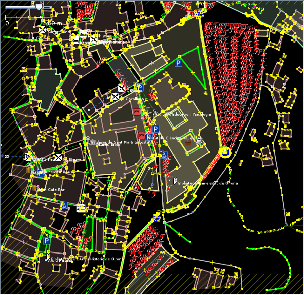Para filtrar la información utilizaremos la ventana de filtros a la que se accede pulsando el botón de filtro 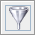.

Pulsando en Add añadiremos los siguientes filtros:
| Filtro |
|---|
| type:node untagged |
| natural=tree |
| amenity: |
El primer filtro ocultará solamente los Nodos que no tengan ninguna etiqueta, son los pequeños cuadraditos amarillos.
El segundo filtro ocultará los elementos etiquetados con el par clave - valor natural - tree, en la imagen las efes rojas.
Por último, el tercer filtro ocultará cualquier elemento que tenga la clave amenity sea cual sea el valor de esta.
Los filtros se activan o desactivan usando las dos cajas de comprobación que hay al lado de cada uno.
La primera caja, marcada con una E activa o desactiva el filtro y la segunda, marcada con una H oculta o muestra los objetos filtrados.
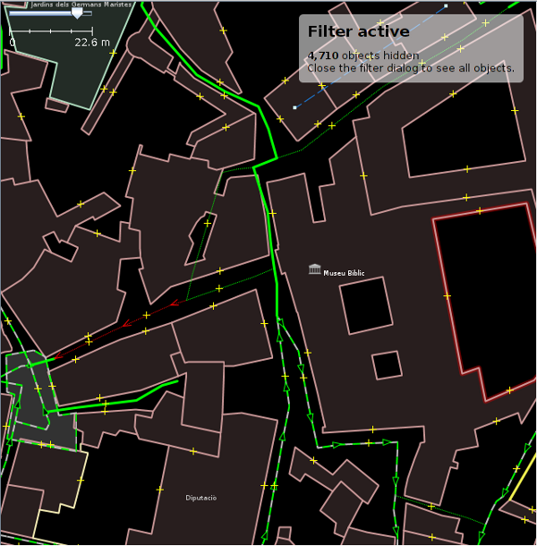2.4. Añadiendo imágenes¶
Aunque existen muchos servicios de imágenes que podemos añadir como referencia para la digitalización de contenidos, en España existe la autorización tácita para emplear las imágenes del Plan Nacional de Ortofotografía Aérea (PNOA).
Añadir las imágenes de fondo es un proceso en dos pasos, primero hay que definir el origen de datos y después seleccionarlo para que cargue en la zona de visualización.
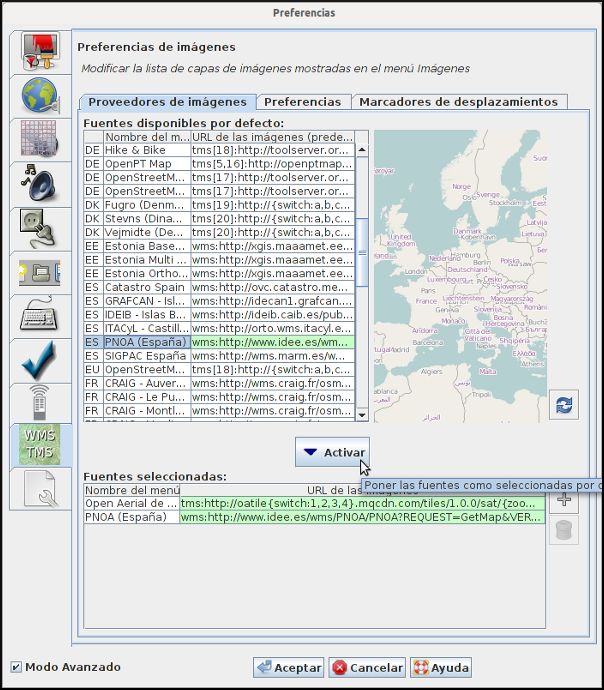Pulsando la tecla F12 aparece el menú de preferencias, hay que pulsar en la pestaña WMS TMS para que aparezcan las opciones. Buscaremos en la lista la opción ES PNOA Spain y pulsamos el botón Activate que añade la capa a las opciones de menú, tras lo que podemos pulsar OK.
Aparentemente nada habrá cambiado, pero ahora hay una nueva entrada en el menú Imagery y al pulsarla se cargará una capa, debajo de la capa de datos actual, con la ortofotografía de la zona.
Es una capa que se puede activar o desactivar 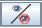 , o cambiar la transparencia 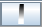.
2.5. Digitalizando¶
Para probar la digitalización crearemos una nueva capa en la que poder trabajar sin modificar los datos que se han descargado, para crear la capa usaremos el menú File > New Layer o el atajo de teclado Ctrl+N.
Al crear la nueva capa, la capa de datos anterior deja de ser la capa de datos activa y aparecerá como líneas de color negro. Es conveniente desactivar la capa para poder ver la ortofotografía, para lo que seleccionaremos la capa y pulsaremos en botón de cambiar la visibilidad .
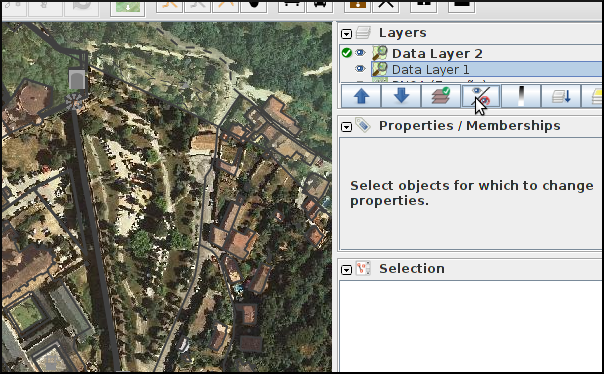También es recomendable desactivar los filtros pulsando en la casilla E.
Para digitalizar un punto, haremos zoom sobre una zona con árboles, el zoom se controla con la barra que hay arriba a la izquierda, pero también con la rueda del ratón. Pulsaremos con el botón derecho del ratón sobre el nombre de la capa del PNOA y seleccionaremos Change resolution. A continuación pulsamos sobre el botón agregar  o pulsamos la tecla A para entrar en el modo de edición.
o pulsamos la tecla A para entrar en el modo de edición.
2.5.1. Nodos¶
Digitalizamos los árboles poniendo un punto, haciendo un solo click, sobre cada copa de la ortofotografía. JOSM está pensado para añadir elementos lineales por lo que por defecto espera tener que añadir líneas, para añadir tan solo puntos deberemos pulsar la tecla ESC después de hacer click sobre cada árbol.
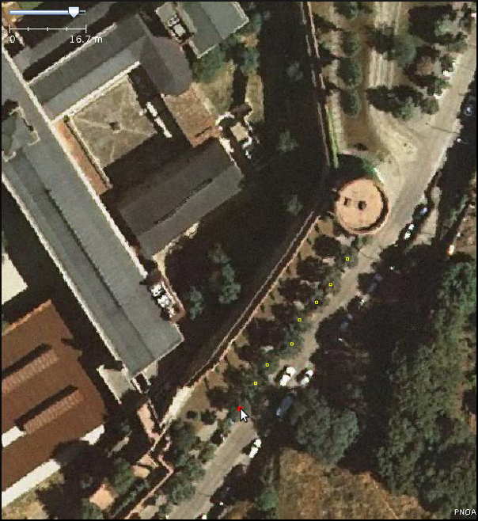Hay una manera de acelerar la digitalización de puntos aprovechando que JOSM tiene muchos atajos de teclado: si mantienes pulsada la tecla Shift mientras añades nodos no tendrás la necesidad de ir pulsando la tecla ESC después de poner cada nodo.
En realidad estamos simplemente poniendo los Nodos, para que OSM los reconozca como árboles deberíamos añadir también las Etiquetas, como veremos más adelante.
2.5.2. Vías¶
Para digitalizar una vía, buscaremos un nivel de zoom que nos permita ver la vía en su totalidad por lo menos una parte muy significativa de ella.
Puede que tengamos que desplazarnos por la imagen, pero como estamos en modo edición si hacemos click con el botón izquierdo añadiríamos un nuevo nodo ... para Desplazarnos hacemos click Derecho con el ratón y sin soltar movemos la imagen.
Para digitalizar la vía vamos marcando nodos de manera consecutiva intentando seguir el eje de esta y respetar la forma siguiéndola sobre la ortofotografía. Es interesante que además pongamos un nodo en cada intersección que tenga la vía, lo que facilitará interconectar las vías entre si.
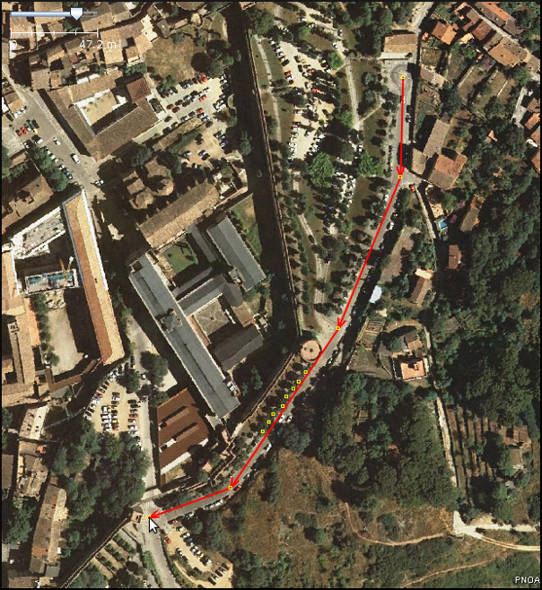Un par de atajos de teclado útiles a la hora de digitalizar vías:
Pulsar la tecla Alt mientras digitalizas vías, te permite hacer que el próximo nodo, aunque esté conectado al nodo anterior, forme una vía nueva.
Cuando tenemos una vía seleccionada (también funciona con vías cerradas) tener la tecla Ctrl pulsada te permite rotar el elemento seleccionado.
Si pulsamos Ctrl + Alt podremos cambiar la escala del elemento seleccionada.
Por último, si mientras digitalizamos pulsamos la tecla Tab una vez entraremos en el modo ortogonal en el que las líneas irán adaptándose a ángulos pre-establecidos y que pueden ser configurados. Para abandonar el modo ortogonal se vuelve a pulsar Tab.
2.5.3. Áreas¶
Las áreas no son más que una vía que empieza y acaba en el mismo punto y tiene una etiqueta que la identifica.
En este ejemplo, digitalizaremos el área de aparcamiento que hay en la zona en la que estamos trabajando, teniendo en cuenta que deberemos cerrar la vía pulsando al final sobre el primer nodo que digitalicemos.
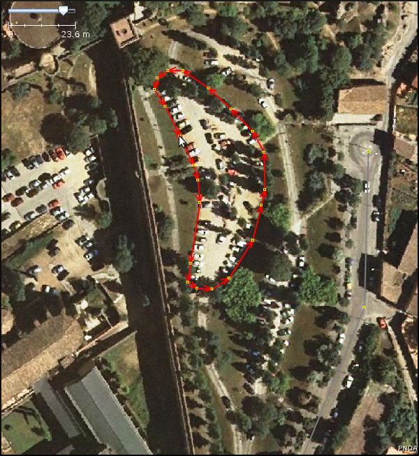Los edificios son seguramente el caso más típico de áreas a digitalizar.
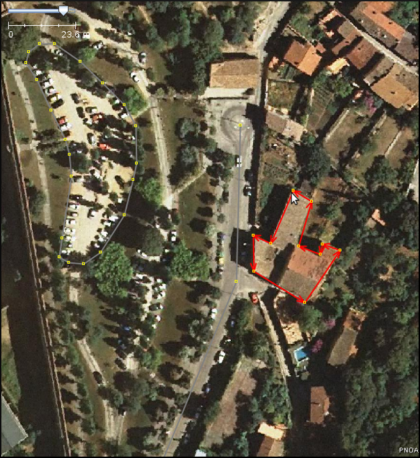2.6. Añadiendo etiquetas¶
Para el siguiente paso es preferible desactivar la capa del PNOA seleccionándola y pulsando el botón correspondiente .
Seleccionaremos el primer árbol que hemos digitalizado para lo que hay que entrar en modo selección pulsando el botón selección  o la tecla S y hacemos click sobre uno de los nodos que representan a los árboles, puede que tengamos que hacer un poco de zoom.
o la tecla S y hacemos click sobre uno de los nodos que representan a los árboles, puede que tengamos que hacer un poco de zoom.
Una vez seleccionado, pulsamos el botón Add de la ventana Properties/Memberships para poder añadir las Etiquetas correspondientes.
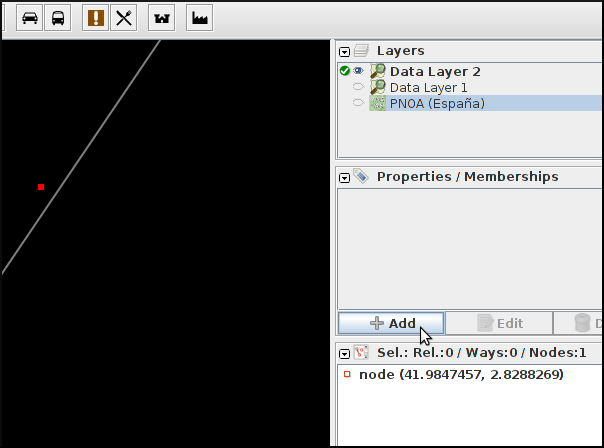2.6.1. ¿Qué etiquetas se emplean para indicar que es un árbol?¶
Lo mejor SIEMPRE es consultar la wiki de OSM donde tienen un listado de elementos comunes en los mapas Map Features en español y cómo emplearlos. En este caso buscaremos la entrada de árbol en la página y vemos que se corresponde con el par clave/valor natural/tree.
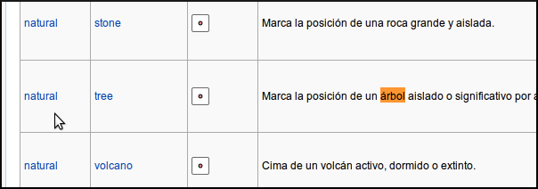Pero además si pulsamos sobre la palabra tree nos lleva a la entrada específica de la wiki en la que explican las características a tener en cuenta y generalmente se detallan las claves a las que también suelen estar asociadas las entidades a cartografiar e incluso ejemplos.
En definitiva, los árboles suelen etiquetarse usando las siguientes claves:
- natural con el valor tree
- name
- type
- height
- name:botanical
La aplicación JOSM tiene, para determinados elementos, una serie de entradas de menú que permiten rellenar de manera cómoda las etiquetas. En el caso de los árboles, tras seleccionar uno usaremos las opciones de menú Presets > Geography > Nature > Tree.
Pueden asignarse etiquetas a grupos de elementos, para lo que primero hay que seleccionarlos manteniendo pulsada la tecla Mayúsculas mientras se va haciendo click; para posteriormente aplicar la etiqueta, según el procedimiento ya visto.
También pueden copiarse etiquetas entre elementos, seleccionamos el elemento que tiene las etiquetas y lo copiamos con Ctrl + C y después seleccionamos el elemento destino y pulsamos Ctrl + Shift + V y le asignará automáticamente las etiquetas del primer elemento.
2.6.2. Resto de etiquetas¶
Ahora hay que proceder igual con los demás elementos de nuestro dibujo.
Consultaremos los elementos en su página correspondiente y añadiremos las etiquetas que creamos sean necesarias para describir la realidad.
El resultado tras aplicar las etiquetas será parecido a este:
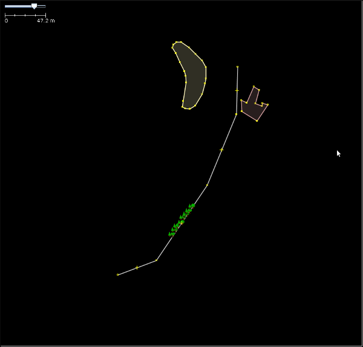2.6.3. Especificar las fuentes¶
Es muy importante identificar los orígenes de datos de la información, ya que es una de las formas de medir la calidad de los datos que almacena OSM.
En España, si se digitalizan datos sobre la ortofotografía del PNOA hay que añadir a TODOS los elementos digitalizados el par clave valor source/PNOA y a ser posible la clave source:date cuyo valor corresponde con la fecha en la que se realizó el vuelo
Otros posibles orígenes de datos válidos para usar en España se pueden encontrar listados en la página web Spain Datasources de la wiki de OpenStreetMap.
2.7. Consejos generales sobre digitalización y etiquetado¶
- Acude SIEMPRE a la documentación y los expertos
- En caso de duda es mejor consultar la wiki primero y si no se encuentra la respuesta acudir a las lista de correo en español de OpenStreetMap
- Don’t map for the render
- O lo que es lo mismo, en general y excepto en muy contadas excepciones, no hay que dibujar y etiquetar las cosas “para que queden bonito en el mapa”, se debe dibujar y etiquetar la realidad o la mejor representación de ella que se pueda conseguir.
- No reinventar la rueda
- Hay mucho planeta cartografiado en OpenStreetMap, posiblemente alguién ya haya solucionado el probleam de representación de la realidad que se te presenta, muchas veces se aprende más intentando ver cómo han resuelto otros problemas similares, busca sitios donde ocurran los mísmos fenómenos que quieras representar y mira como lo han hecho otros.
2.8. Guardando el archivo¶
Para poder continuar con el taller será necesario guardar esta información, para lo que pulsaremos con el botón derecho del ratón sobre el nombre de la capa y seleccionaremos la opción Save as... lo que nos permitirá guardar la información en formato .osm que es el formato XML de OpenStreetMap.
2.9. Ejercicio¶
En la provincia de Valencia, al sur de la Albufera, se encuentra la localidad de Polinyà de Xúquer, una pequeña población de 2.000 habitantes que a fecha de redacción de este taller no tiene ni siquiera el entramado básico de calles.
| min lat | 39.1899 | min lon | -0.3773 |
| max lat | 39.2025 | max lon | -0.3603 |
Como ejercicio del taller se propone levantar el entramado de calles de Polinyà del Xúquer, digitalizar los edificios de una manzana y señalar algunos elementos puntuales.